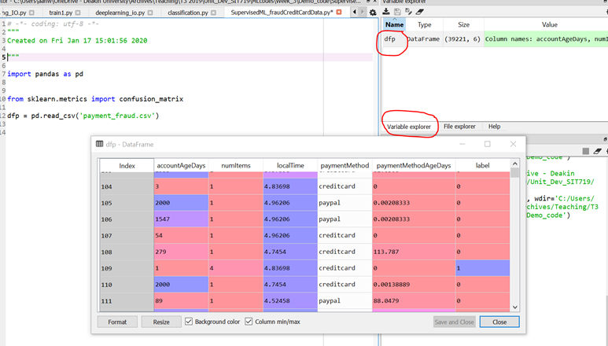
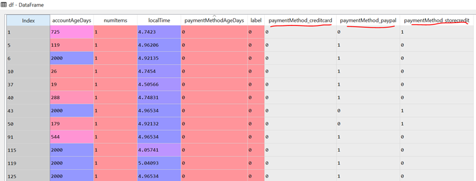

Let’s see how machine learning can help in security analysis on a dataset. Here we are going to use a simple “payment fraud” dataset. The dataset that we are using is transaction data for online purchases collected from an eCommerce retailer.
You can access the dataset from the "Weekly Datasets and Codes" as well as from the VM provided to you under week 3 learning resources.
The dataset contains 39,221 transactions, each comprising 5 properties that can be used to describe the transaction, as well as a binary “label” indicating whether this transaction is an instance of fraud—“1” if fraudulent, and “0” if not. The comma-separated values (CSV) format that this data is in is a standard way of representing data for analytics.
import pandas as pd
from sklearn.metrics import confusion_matrix
dfp = pd.read_csv('payment_fraud.csv')
Once you run the above commands, the dataset is imported. To check it, click on the variable explorer and double click on the dfp dataframe. You will be able to see the dataframe as below:

Here you can see the five properties “AccountAgeDays”, “numItems”, “localTime”, “paymentMethod“, “paymentMethodAgeDays” and “label”. Index 109 corresponds to “1” in label column. That means, it is fraudulent transactions. The other labeled as “0” represents normal (NOT fraudulent).
Note that one column stands out because it is of non-numerical type: “paymentMethod”. There are three possible values that this feature takes on in our dataset: creditcard, paypal, and storecredit. This feature is called a categorical variable because it takes on a value indicating the category it belongs to. Many machine learning algorithms require all features to be numeric. We can use pandas.get_dummies() to convert variables from categorical to numeric.
df = pd.get_dummies(dfp, columns=['paymentMethod'])
Upon inspection of the new DataFrame object, we notice that three new columns have been added to the table—paymentMethod_creditcard, paymentMethod_paypal, and paymentMethod_storecredit:

Each of these features is a binary feature (i.e., they take on a value of either 0 or 1), and each row has exactly one of these features set to 1, hence the name of this method of categorical variable encoding: one-hot encoding. These variables are called dummy variables in statistics terminology.